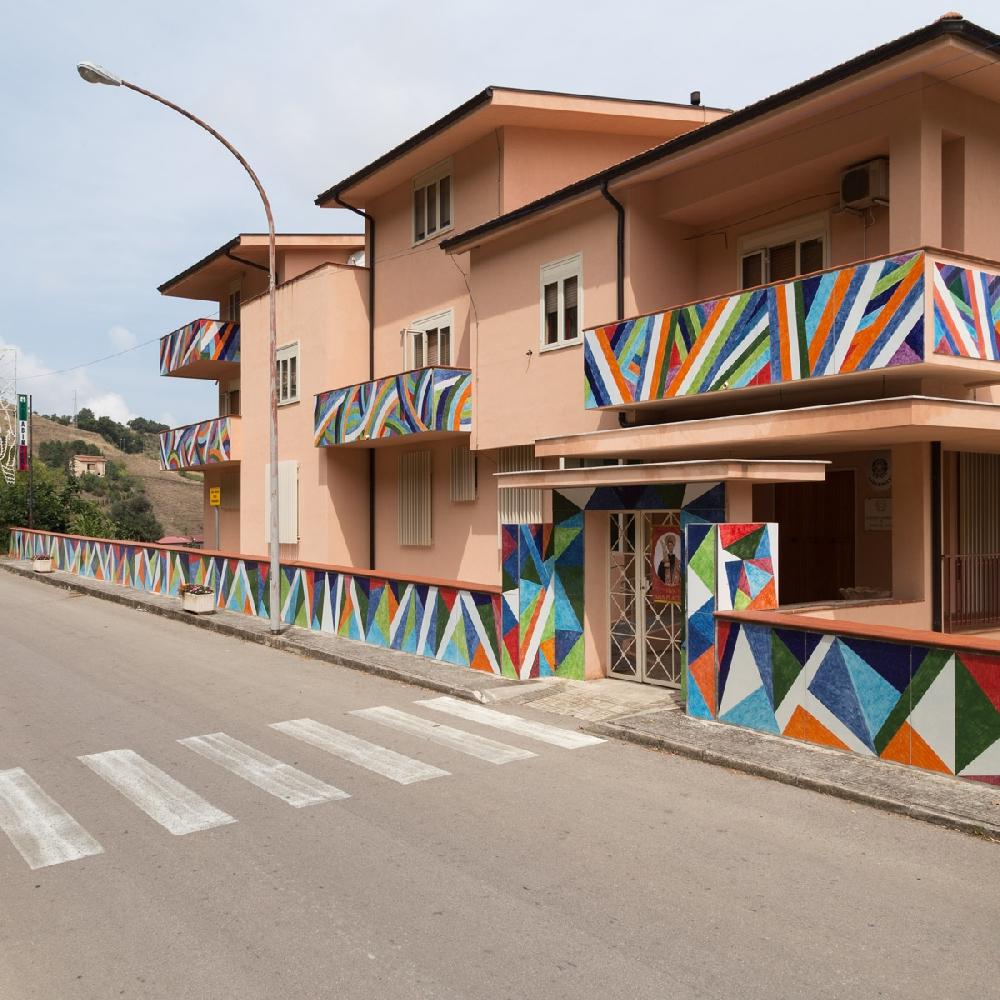

Arethusa
Scopri l'artista
Arethusa: descrizione dell’intervento Arethusa è il nome di un’opera decorativa realizzata nel 1990 da Piero Dorazio e Graziano Marini per il parco Fiumara d’Arte. L’intervento è stato finalizzato ad abbellire la caserma dei carabinieri di Castel di Lucio attraverso l’uso del colore. Diversi punti dell’edificio sono stati ricoperti di ceramica che successivamente è stata dipinta. La scelta di questo materiale è stata dovuta alla sua capacità di contenere, nella sua superficie brillante, sottili e articolate scale cromatiche dai toni più tenui a quelli più intensi. Le geometrie realizzate sono molto semplici mentre per i colori la scelta è ricaduta su tonalità emblematiche: il rosso, il bleu, il bianco. Come spiega Piero Dorazio: «L’effetto dell’insieme è ritmico, dinamico e severo, piuttosto che decorativo, esso deve conferire all’edificio un aspetto distinto e rassicurante, com’è poi la sua funzione».
Il significato di Arethusa è un chiaro omaggio da parte dei due artisti al mondo classico. Nella mitologia greca Arethusa è infatti una ninfa che, pur di sfuggire al dio Alfeo, decide di farsi trasformare in una sorgente d’acqua, la cosiddetta Fonte Aretusa di Ortigia. Ciò che Dorazio apprezza maggiormente del mondo classico è il ruolo fondamentale che veniva attribuito al colore nelle decorazioni architettoniche. Tutti i templi greci, ad esempio, erano ricoperti di uno strato di pigmento, spesso dai toni molto sgargianti. Un altro punto di riferimento, ben presente nella testa di Dorazio, era la Porta di Ištar del Pergamonmuseum di Berlino. È una delle otto porte dell’antica città di Babilonia ed è la più grande decorazione in ceramica policroma che esiste al mondo. Per oltre quarant’anni Dorazio ha provato a proporre progetti per edifici pubblici e privati che prevedevano l’applicazione di opere in ceramica o di mosaici. Finalmente nel 1990 Antonio Presti con il suo progetto gli ha dato questa possibilità.
Dove si trova e come raggiungere Arethusa. L’installazione Arethusa si trova nel territorio di Castel di Lucio. Per raggiungerla è necessario percorrere l’autostrada A20 Palermo-Messina e uscire allo svincolo di Tusa, se si proviene dalla Sicilia Occidentale o di Santo Stefano di Camastra, se si proviene dalla Sicilia Orientale. Da qui poi si prende la SP 113 che vi collegherà poi con SP 176. Questa è la strada che collega la costa con i vari paesini della montagna dove sono dislocate le opere della Fiumara d’Arte. Sempre a Castel di Lucio si trovano altre due installazioni del parco Fiumara d’Arte. Si tratta del Labirinto di Arianna di Italo Lanfredini e Una curva gettata alle spalle del tempo di Paolo Schiavocampo.